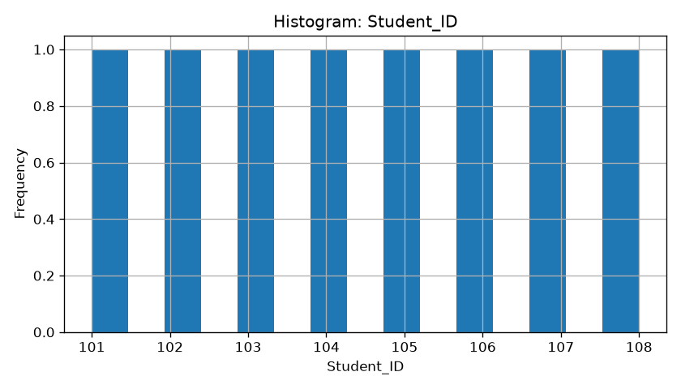
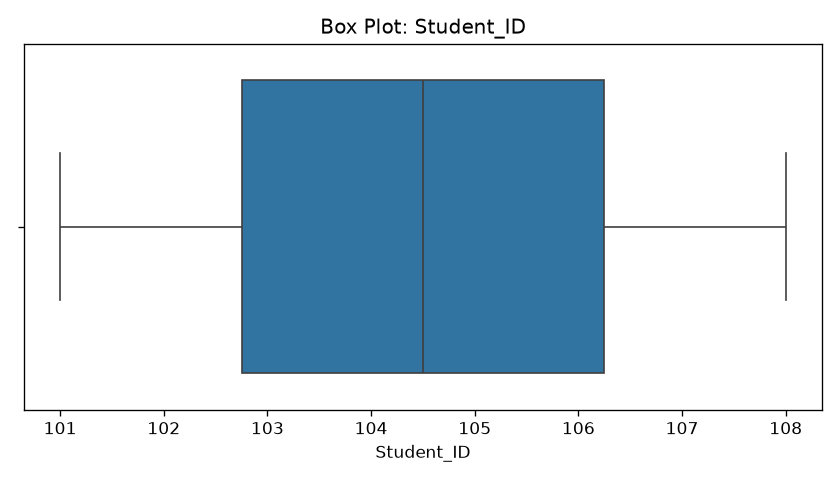
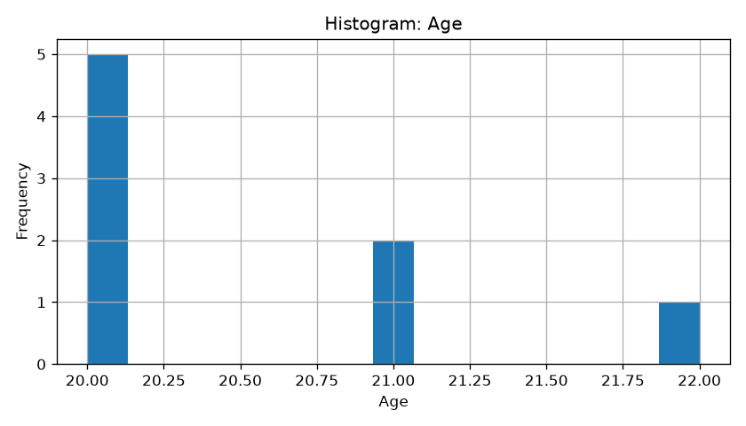
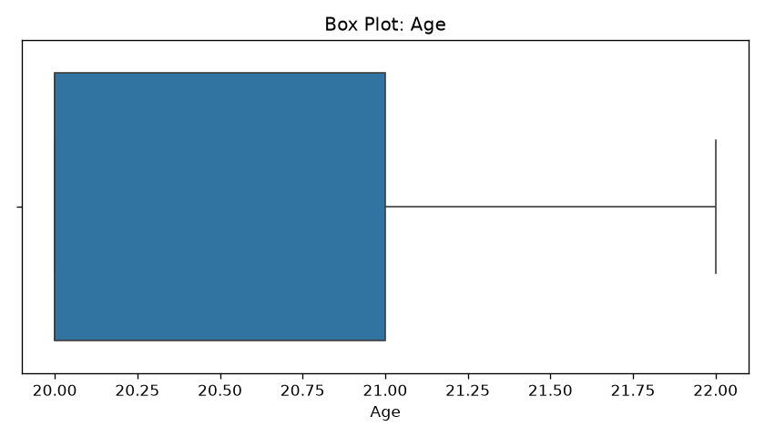
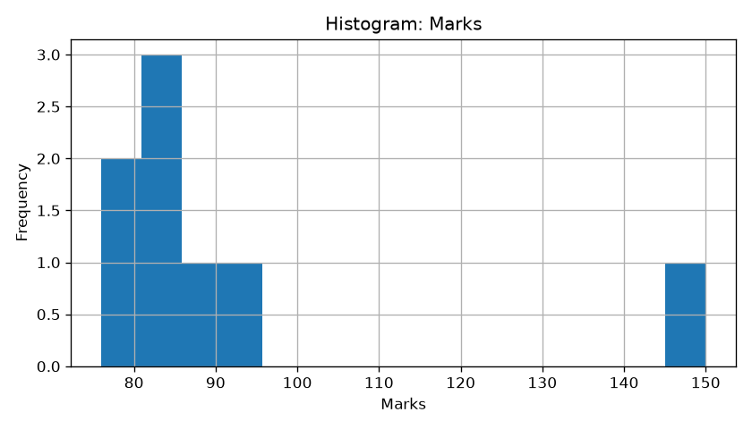
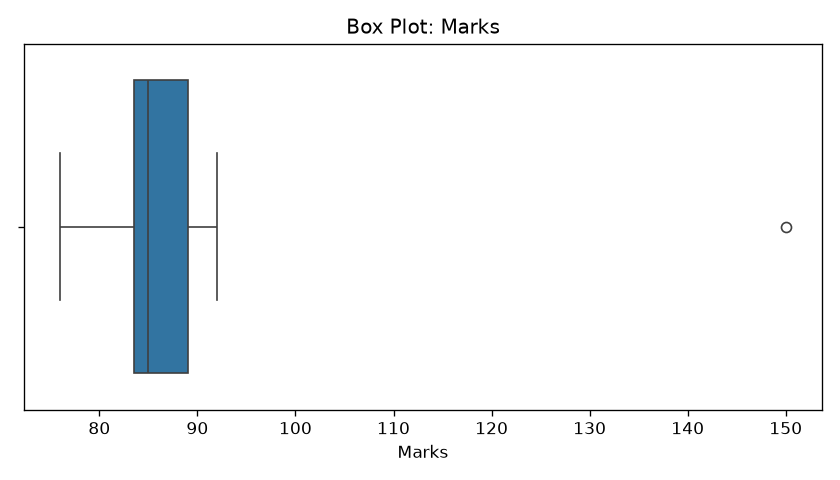
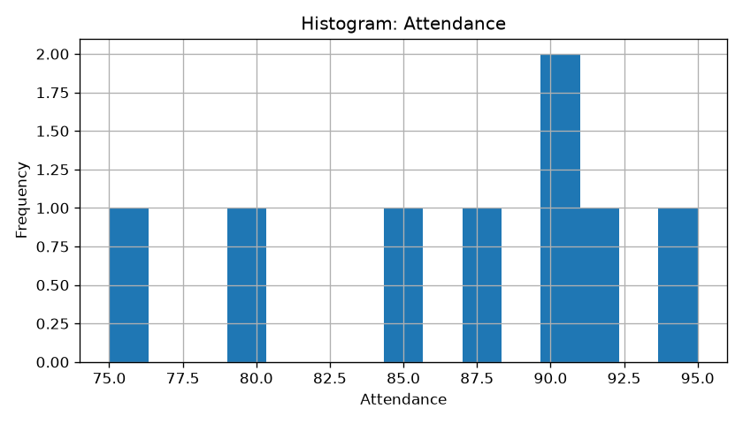
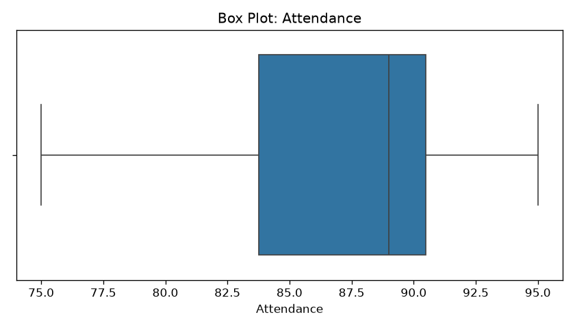
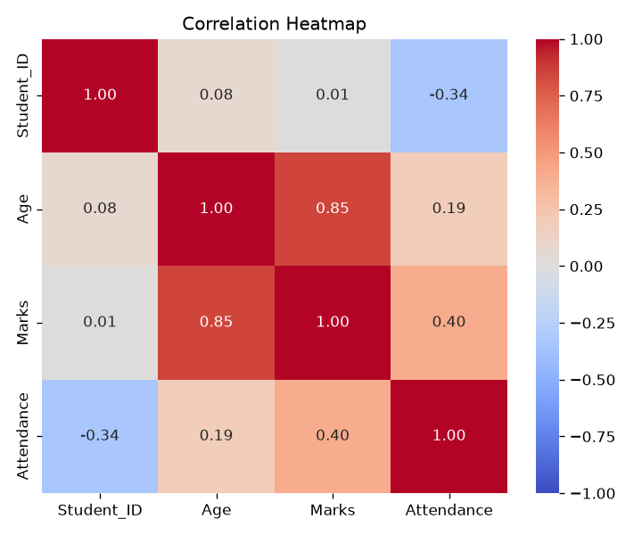

Generated by the P-15 Data Cleaning Toolkit.
Input file: dataset1.csv
Rows after cleaning: 8 Columns: 5
| Missing values | |
|---|---|
| Student_ID | 0 |
| Name | 0 |
| Age | 0 |
| Marks | 0 |
| Attendance | 0 |
| Student_ID | Age | Marks | Attendance | |
|---|---|---|---|---|
| count | 8.00 | 8.00 | 8.00 | 8.00 |
| mean | 104.50 | 20.50 | 92.50 | 86.88 |
| std | 2.45 | 0.76 | 23.75 | 6.60 |
| min | 101.00 | 20.00 | 76.00 | 75.00 |
| 25% | 102.75 | 20.00 | 83.50 | 83.75 |
| 50% | 104.50 | 20.00 | 85.00 | 89.00 |
| 75% | 106.25 | 21.00 | 89.00 | 90.50 |
| max | 108.00 | 22.00 | 150.00 | 95.00 |
| Name | |
|---|---|
| count | 8 |
| unique | 7 |
| top | Aman |
| freq | 2 |
| Column | Outliers detected |
|---|---|
| Student_ID | 0 |
| Age | 0 |
| Marks | 1 |
| Attendance | 0 |








